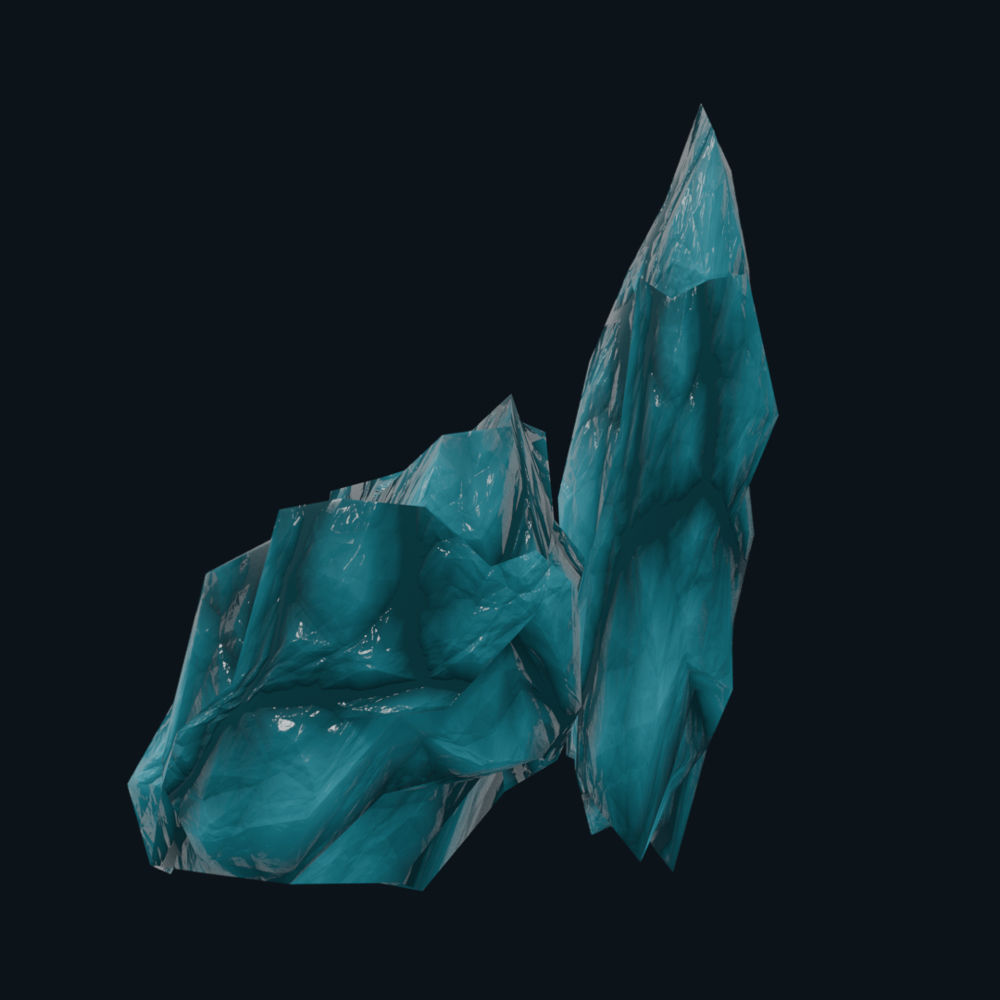
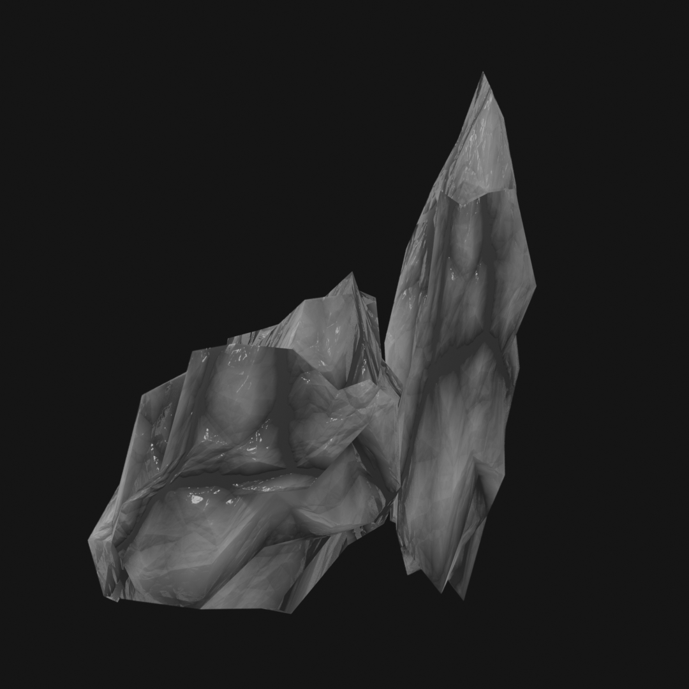

3D Art & Design / Environment / Material Study
Crystal
A focused environment study built around crystal forms, reflective materials and atmosphere.

01Project
A focused environment study built around crystal forms, reflective materials and atmosphere.
This project is presented as an individual case study using the original source assets. The gallery preserves separate images, videos and source documents instead of combining them into a single screenshot.
The visual scale is normalized across the portfolio so each project page feels consistent while the original content remains intact.
02Project assets


CATEGORY3D Art & Design
PROJECTCrystal
Back to category ↗All work ↗